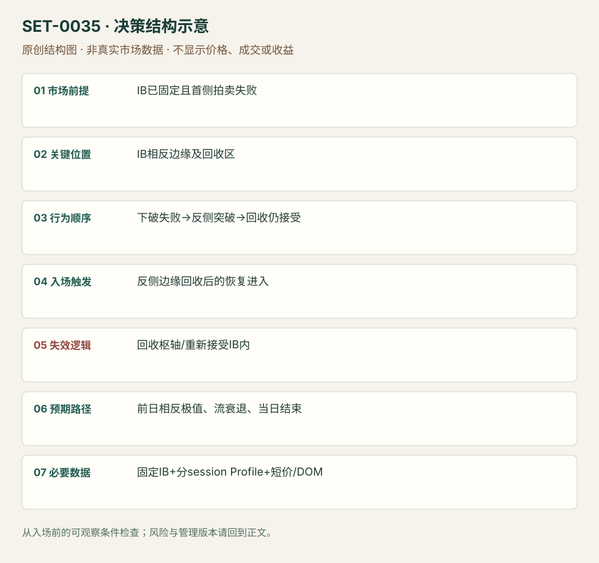

IB 首侧失败后的反侧突破与回收
Failed-first-side IB Reversal and Acceptance · SET-0035 · reviewed · v1.0.0
盈利证据：not_established。审查范围与来源版本见第13节；未知字段保留缺失原因。
1. 名称与快速概览
开盘先下破已固定的 IB 低却失败，随后横穿范围突破 IB 高，并在上沿回收时仍被接受。先前的错误拍卖方向是必需条件；只有普通上沿回测归0010。
记录口径：PA core；必要数据 OHLC、initial_balance、session_profile、DOM。名称性质：编辑性描述名，英文保留来源术语以便检索。reviewed 只表示本条规则与证据记录审查通过，盈利状态为 not_established。
2. 本质与行为假说
下方没有得到持续接受、上方重新得到买方响应，提供方向重新选择的证据。作者对隐藏强买方的解释不能被当身份事实；判断由双侧先后行为和持价验证。
3. 适用市场与环境
源例2020-03-10 Eurostoxx大波动日、日线仍弱而当前开盘在前日价值上方。更大方向弱不是机械禁止多头，但只有首侧失败和反侧接受成立才操作。
来源实用市场：Eurostoxx期货。
Session：来源图IB自7:00附近开始，cash open另标；原图时区未明确。本库要求保留该原始窗口与数据时区；迁移时另立版本、该session结束前平仓。
跨市场：本版不主张已经验证的跨市场迁移；更换市场必须重定数据来源、流动性与session。
4. 出现前的观察清单
固定IB窗口及上下边界，记前日POC/VPOC和前日高；以数据商时区记录现金开盘。源图IB先于其标注cash open，不能擅自改成纽约09:30首小时。
5. 形成过程与状态转换
先形成IB → 下破IBL迅速否认 → 走到并越IBH → 回落到IB内未被接受 → 再恢复IBH上方 → 近上沿弱卖出转为上推。
6. Entry trigger 与执行方式
源例回收IBH后在3045–48区观察卖出轻而买入恢复执行。公开可复盘版等回收上沿后的局部恢复；完整顺序少首侧失败就不计本条。没有观看来源直播视频，未宣称原订单可核实。
7. Invalidation 与止损逻辑
原例不应有力重返3042及其下，附近3044弱卖出允许持有；这属于情境保护，非所有产品通用点数。编辑版硬保护为回收上沿后已知枢轴，价格被接受IB内即失效。
8. Exit、target 与 trade management
前日高为原方向目标；到位后衰弱减仓。源图后来回落，图上高点不是承诺成交目标；现金参考session结束前平仓。
9. 常见 variations
上下对称；当日先破低再破高与单纯改IB分钟数有不同状态序列。订单流精细入口是执行层，不能再计独立条。
10. 失败方式与不交易条件
下方其实持续被接受；上破后回落接受IB内；无首次错向尝试；前日目标空间不足；用最终日低定义首侧失败。
11. 与相近 setups 的区别
12. 图表与案例解读
已看完整1分钟日内图。午后回到范围内属于后续行情，不能倒填成入场前条件；白框不是已看过的视频片段。
- [VIS-000038] Eurostoxx 50 1 Minute Chart；定位：Eurostoxx 1 Minute Chart。图中IB2990–3043、cash open和前日高均标出；先破低再越高，白框对应原文执行区域。 验证：chart_viewed。

本地原创示意（VIS-000092，非真实市场数据）：

小屏阅读可打开原尺寸示意图并缩放。

此图用于对照识别顺序与风险定义；不计入真实案例覆盖率。
视觉材料元数据与查看范围
- VIS-000038 · real_source_chart / structure_and_trigger / chart_viewed
品种：Eurostoxx；日期：2020-03-10；周期：1分钟；时区：未知/不适用
时区未在图中核对；来源图表不是成交审计 - VIS-000092 · synthetic_structure_diagram / illustration_only / generated_not_market_evidence
品种：未知/不适用；日期：未知/不适用；周期：未知/不适用；时区：未知/不适用
无真实品种、日期或价格：这是结构示意
13. 证据、分歧与未知项
Axia同家族完整案例和限制案例，独立佐证有限。图表已看，正文订单叙事已读，但没有看视频/逐笔动态或账户回执。
- [EVD-000070] Dawid Janczy，《Eurostoxx Initial Balance High – Live Trading》，SRC-0074；定位：Initial Balance High Closer Look / execution at3045–48。支持：先下破IB低快速收回，再越IB高；上沿回落又被买回后进入，不能有力回到3042，目标前日高。
- [EVD-000071] Axia Futures，《Trading Initial Balance Break Using Market Profile》，SRC-0072；定位：IB structure and failed target example。支持：IB只提供位置，还需先验结构与明确失效；同家族案例限制“突破必到目标”的期待。
审查边界：来源份数与独立核心核验分开；当前类别为 limited_single_family。正文中的概念、官方事实、衍生解说或同族资料只按其支持范围使用。
14. 可用于复盘的检查表
- ☐ 下单前的前提可核对：IB已固定且首侧拍卖失败
- ☐ 事前标记位置：IB相反边缘及回收区
- ☐ 行为按顺序出现：下破失败→反侧突破→回收仍接受
- ☐ 实际触发符合选定版本：反侧边缘回收后的恢复进入
- ☐ 事先写明本次否定条件：回收枢轴/重新接受IB内
- ☐ 目标/路径只用当时已知信息：前日相反极值、流衰退、当日结束
- ☐ 数据满足 固定IB+分session Profile+短价/DOM；记录时间、点差、滑点、队列和未成交
- ☐ 记录截止平仓及规则偏离；正常亏损不事后改成“未成立”
15. 后续验证问题
首侧失败如何排除已经充分接受的趋势？定义IB在不同欧洲时区的敏感性？去掉首侧失败前提后的差别？
双向相关导航
- SET-0004 显著成交重心跌破后的回测延续 价值迁移延续要求新成交区建立；本条交易旧重心角色变化。
- SET-0002 五分钟开盘区间突破 0002 一侧首5分钟方向突破即可，本条必须先错侧失败再反侧接受，且IB窗口不同。
- SET-0010 突破后首次回测守住旧边界 0010 只要求一个既有边界的首次回测；本条额外必需双侧拍卖失败序列。